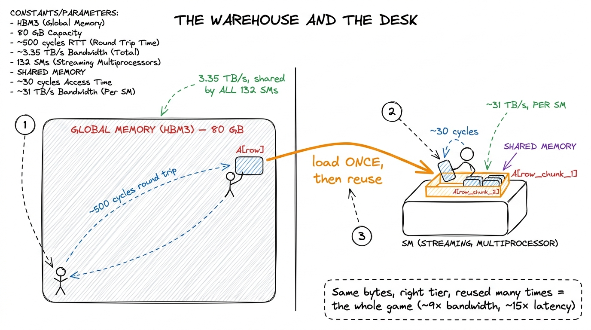
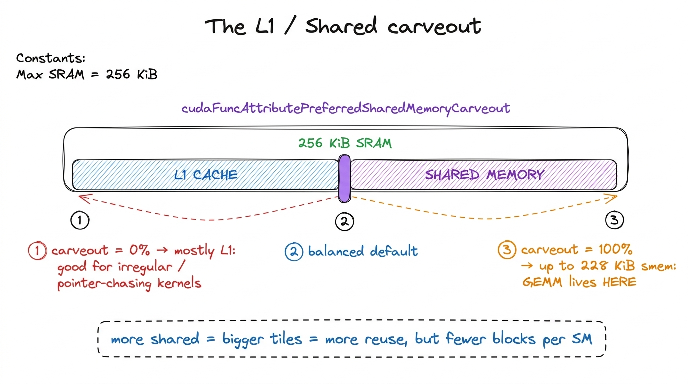
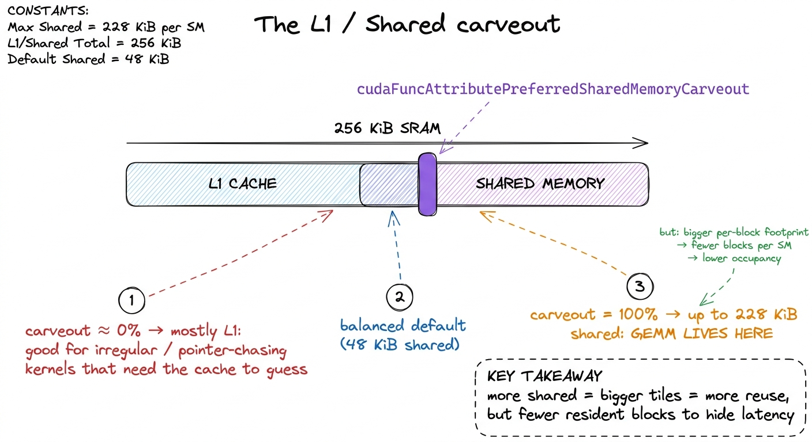
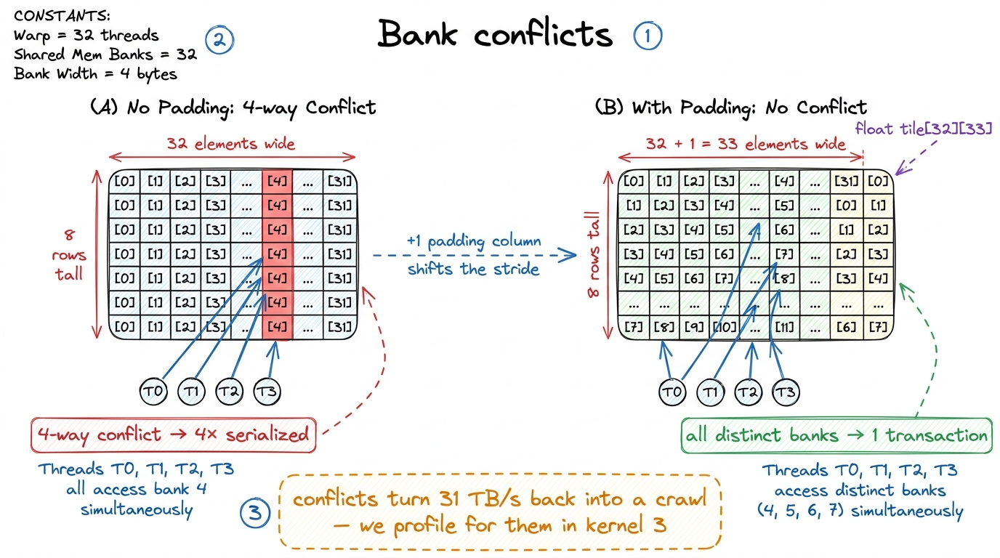

Shared memory & L1 SMEM
The naive GEMM kernel loses because it treats global memory (HBM) as if it were a scratchpad — every thread reaches all the way out to the 80 GB of HBM3 for every operand, thousands of times, re-reading the same bytes. The fix is not a better algorithm; it is a better place to keep the bytes we already fetched. That place is a small, absurdly fast pool of on-chip memory that you, the programmer, control by hand. On an H100 it gives you about 31 TB/s of bandwidth — roughly 9× the HBM3 number — and it is the single feature that turns the GEMM ladder from a toy into a real climb.
This article is about that pool: shared memory (SMEM), what it physically is, how much of it you get, how it's carved up into banks, and why it is the star optimization surface for every kernel worth writing. We'll stop just short of the tiling code itself — that's kernel 3 — and instead build the mental model you need before you write a single __shared__ declaration.
One block of SRAM, two personalities
Physically, shared memory is not a separate structure. On each Streaming Multiprocessor (SM) there is a single block of fast static RAM (SRAM) — 256 KiB of it on Hopper — that the hardware splits between two roles: the hardware-managed L1 data cache and the programmer-managed shared memory.1 This "unified L1/shared" design has been the NVIDIA way since Volta. Before that (Kepler/Maxwell) L1 and shared were genuinely separate arrays, and the split was far less flexible. The unification is why the split is now a runtime knob rather than a fixed floorplan. Same silicon, same read ports, same latency class — the only difference is who decides what lives there.
The distinction is the whole point. L1 is a cache: the hardware guesses what you'll reuse, evicts on its own policy, and you have no direct say. Shared memory is a scratchpad: nothing lands in it unless you write it there, and nothing leaves until you overwrite it. For GEMM that control is everything. We know exactly which tile of A and which tile of B a block of threads will reuse; we don't want to hope the cache keeps them, we want to pin them. Shared memory lets us do that.

figure rendering · The on-chip memory hierarchy of one SM. Shared memory and L1 are two pHow much do you actually get
The headline number is that you can carve out up to 228 KiB of that 256 KiB block as shared memory per SM. That leaves a sliver — the remaining ~28 KiB — reserved for L1 and the hardware's own bookkeeping, which is why you can never claim the full 256.2 The 228 KiB is the opt-in maximum, not the default. Ask for it and you cap your occupancy: a block wanting 228 KiB is the only resident block on its SM. Kernels that want two or three blocks co-resident deliberately ask for less. The number is also not a round power of two precisely because of that reserved carve-out. To actually get more than the conservative default (48 KiB), you have to ask for it explicitly, both as a static attribute on the kernel and, historically, by raising a device limit:
// Opt into the large shared-memory carve-out (Hopper: up to 228 KiB)
cudaFuncSetAttribute(myKernel,
cudaFuncAttributeMaxDynamicSharedMemorySize,
228 * 1024);
// Then launch with that much dynamic smem:
myKernel<<<grid, block, 228 * 1024>>>(...);Skip that opt-in and the driver silently caps you at 48 KiB, and a tiling kernel that "should" have room for a big tile mysteriously fails to launch or falls back to a smaller footprint. This is one of those bugs that costs an afternoon precisely because nothing errors loudly — it just runs slow. So the first habit of shared-memory work is: decide your tile size, compute the bytes, and ask for exactly that.
The configurable split, and why you'd tune it
Because L1 and shared live in the same SRAM, giving more to one takes from the other. Hopper lets you steer the ratio with cudaFuncAttributePreferredSharedMemoryCarveout, expressed as a percentage. The mental model is a slider:

figure rendering · The split is a per-kernel slider. GEMM slams it toward shared; a cacheFor GEMM the choice is obvious: we don't want an opaque cache guessing for us, we want the biggest scratchpad we can get, so we push the slider all the way to shared. But the trade is real and worth naming. Every kilobyte you hand to shared memory is a kilobyte the hardware can't use to cache your incidental global accesses, and — more importantly — a bigger per-block shared footprint means fewer blocks fit on an SM at once, which lowers occupancy (the number of resident warps available to hide latency). A kernel with irregular, cache-friendly access patterns is often better off leaving the slider toward L1. The right answer is workload-specific, which is exactly why NVIDIA made it a knob instead of a constant.
Why this is the star of the ladder: reuse
Here is the arithmetic that makes shared memory matter. In the naive kernel each output element pulled a full row of A and a full column of B from HBM, and every element in a row re-fetched the same A values independently — an arithmetic intensity of about 1 flop per element loaded — call it ~0.25 flop/byte in FP32. From the three regimes we know that's roughly a thousand times below the H100's ridge point of ~295 flops/byte: hopelessly memory-bound.
Tiling is the cure, and shared memory is the mechanism. The idea: a block of threads cooperatively loads a BM × BK tile of A and a BK × BN tile of B into shared memory once, synchronizes, and then every thread in the block computes its partial products by reading those tiles from SRAM at 31 TB/s instead of from HBM. A single load from global memory is now amortized across an entire block of threads. If the block is 32 × 32, each byte fetched from HBM is reused ~32 times before it's discarded — the arithmetic intensity jumps by that factor, and we vault off the memory wall toward the compute regime.

figure rendering · Cooperative tiling: the block stages A and B tiles into shared memoryThat is the leap. In our own ladder, moving from the coalesced-but-cacheless kernel at 8.5% of cuBLAS to the first shared-memory tiled kernel lands us at 12.8% — and, more importantly, it changes the regime. Every subsequent kernel on the ladder (the 1D tile at 36.5%, the 2D register tile at 68.7%, vectorized at 78.4%, all the way to the warptiled 93.7%) is a variation on getting more reuse out of shared memory and registers. Shared memory isn't one rung; it's the ladder's spine.
The catch we're deferring: banks
Shared memory is fast, but it is not magic, and there's a way to make it behave almost as slowly as HBM. The SRAM is physically divided into 32 banks, one per lane of a warp, each 4 bytes wide.3 32 banks, 32 threads per warp — not a coincidence. The hardware is built so that a warp can service 32 word-sized accesses in a single cycle if and only if they land in 32 different banks. Successive 4-byte words map to successive banks: address a lives in bank (a/4) % 32. When the 32 threads of a warp each touch a different bank, all 32 accesses complete in one transaction — full 31 TB/s. But when two or more threads in the same warp hit different addresses that fall in the same bank, the hardware serializes them. This is a bank conflict, and an N-way conflict makes that access N times slower.
The trap is that natural indexing invites conflicts. If every thread reads down a column of a shared tile whose width is a multiple of 32, all of them collide in the same bank on each step — a 32-way conflict that throws away 31/32 of your bandwidth. The classic fix is padding: declare the tile one element wider than you use (__shared__ float tile[32][33]) so the column stride is coprime with 32 and the accesses fan out across all banks.

figure rendering · A column-major read into an unpadded tile collides in one bank; a singWe're flagging bank conflicts here but not solving them — they only become measurable once we have a tiled kernel to profile, so we'll hunt them with Nsight Compute's l1tex__data_bank_conflicts counters when we get there. For now the takeaway is a warning label: shared memory hands you a 9× bandwidth win, and a careless access pattern can hand most of it right back.
The mental model to carry forward
Three facts are worth pinning to the wall before we write the tiling code. First, shared memory and L1 are the same 256 KiB of SRAM per SM, and you steer the split — GEMM wants nearly all of it as scratchpad, up to 228 KiB, opted into explicitly. Second, its value is reuse: staging a tile once and reading it from SRAM at 31 TB/s converts a memory-bound kernel into a compute-bound one, which is why it's the pivot of the entire ladder. Third, that bandwidth is conditional on spreading accesses across all 32 banks; the moment a warp piles into one bank, you're back to serialized crawling.
With that in hand, the next step writes itself. We take the coalesced kernel from where we left it, give a block of threads a shared tile of A and B, add exactly one __syncthreads() barrier between the load and the compute, and measure. That's kernel 3: the shared-memory cache-blocked GEMM — the rung where we stop reaching for HBM on the hot path and the real climb toward cuBLAS begins.